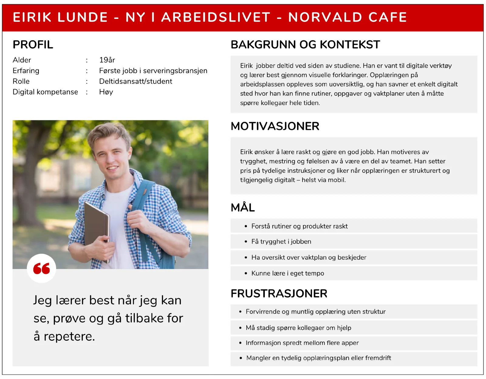
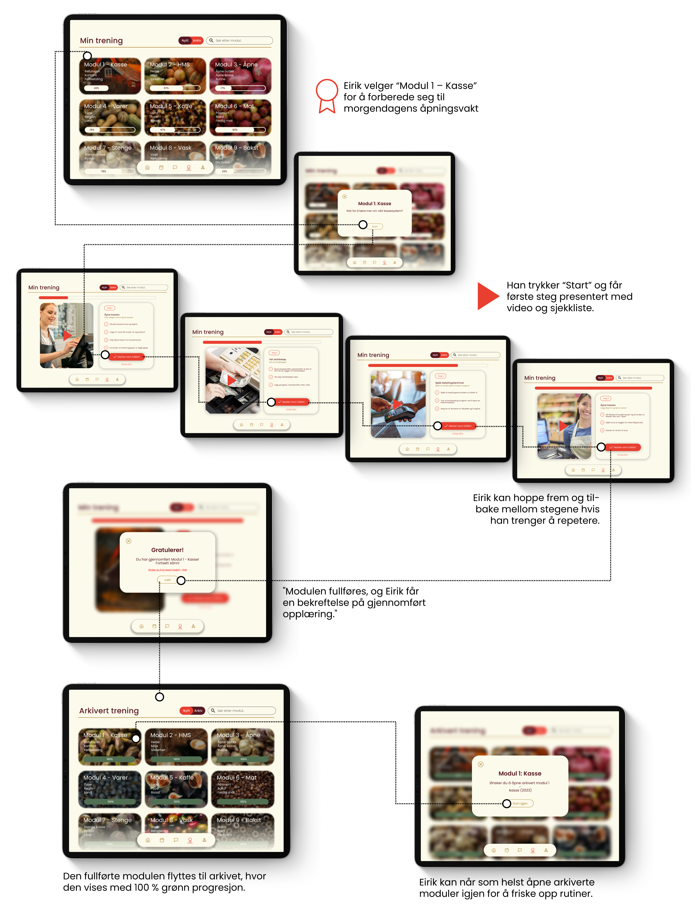

Problem:
Jobbhverdagen er spredt på for mange systemer
Et semi-strukturert intervju med Mari-Mette, daglig leder for Tjønnås Delikatesser og Norvald Café, avdekket at driften var fordelt på fem ulike kanaler: vaktplan i ett system, lønn i et annet, internkommunikasjon i Messenger-grupper, rutiner i Apple Notater, og opplæring som ble gjort muntlig fra vakt til vakt. Med hyppig utskiftning av unge deltidsansatte ble viktig informasjon ofte borte i prosessen.

Scenario
- Eirik skal ha sin første åpningsvakt i morgen, men husker ikke alt fra opplæringen. Han skulle ønske det fantes en enkel måte for ham å lære seg åpningsrutinen hos Norvald.
Sjekk ut brukerreisen hans under, for å se hvordan ansattsportalen kan hjelpe han.

 INNLOGGINGSSIDEN
KALENDERSIDEN
KALENDER>VAKT
INNLOGGINGSSIDEN
KALENDERSIDEN
KALENDER>VAKT
Fra innsikt til løsning
Intervju
Kvalitativt intervju med daglig leder ga oss innsikt i reell drift – ikke antagelser. Valget om å snakke med leder fremfor ansatte var bevisst: hun hadde overblikk over tvers av alle smertepunkter.
Affinity map
Funn gruppert i 6 temaer. Kartet avdekket at vaktplan og kommunikasjon var de to hyppigst nevnte problemene – det styrte prioriteringene våre i løsningsdesignet.
Personas & scenarier
Vi utviklet 5 personas, men valgte to primærbrukere: Kari (erfaren) og Eirik (nyansatt). Disse to representerte de mest ulike behovene – og ble brukt aktivt gjennom hele designprosessen.
Wireframes → Hi-fi
Lo-fi skisser ble iterert til hi-fi-prototype i Figma. Vi beholdt et enkelt navigasjonsmønster fremfor avanserte interaksjoner – basert på brukergruppens lave digitale terskel.
Én samlet ansattportal
Sitemapet ble utarbeidet etter affinity-mappingen (se prosess), hvor seks tematiske områder utkrystalliserte seg som kjernen i portalen. Strukturen speiler bottom-navigasjonen i prototypen, slik at den mentale modellen brukeren bygger opp gjennom sitemapet matcher den faktiske appen 1:1.

Mitt bidrag
Hva jeg eide i dette prosjektet
Jeg ledet brukerinnsikten og utarbeidet intervjuguiden som la grunnlaget for hele prosessen. Jeg hadde ansvar for utvikling av personas og scenarier – inkludert de to primærbrukerne Kari og Eirik. I designfasen tok jeg rollen som UI-designer på mobilflaten: fra lo-fi-skisser til ferdig hi-fi-prototype i Figma, med fokus på tilgjengelighet og WCAG-krav.
Gruppe 01
Teamet bak prosjektet
Josefine Reichelt Gjertsen
Intervjuguide · Personas · UI-design (mobil)
Herman Brenn-Svendsen
Sitemap · Prototyper · Wireframes
Tia Linnea Dahl
Designmanual · Personas · Rapport
Axel Bruusgaard Jewett
Prototyper · Wireframes · Intervju